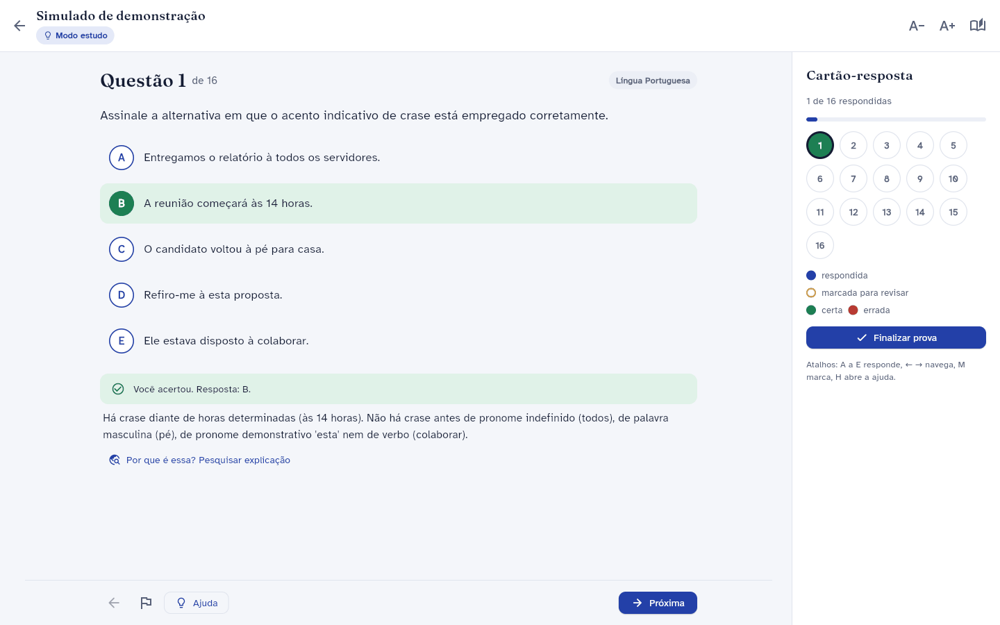

Provas reais
Digite o concurso. A prova chega com o gabarito.
Escreva, por exemplo, Dataprev 2026. O Aprova procura nas bancas, na internet e no PCI Concursos e traz as provas com o gabarito oficial, prontas para abrir no próprio app.
Faça em modo simulado, com cartão-resposta, ou em modo estudo, com a correção a cada questão e a explicação logo abaixo.
Cada simulado traz primeiro as questões que você nunca fez. Questão com texto quebrado ou alternativa faltando fica de fora.
- Sem repetir questão
- Modo simulado
- Modo estudo
- Atalhos de A a E
